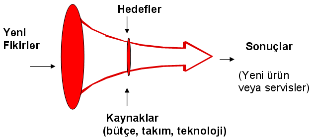
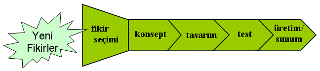
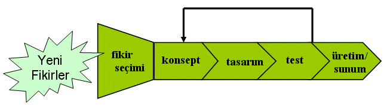
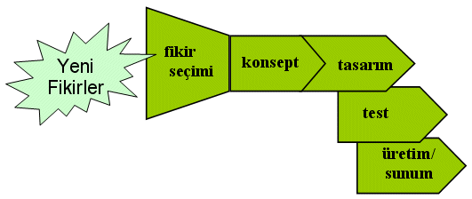

Dr. Evrim Didem Güneþ
Operasyon Yönetimi Grubu
ÝÝBF, Ýþletme Bölümü
Koç Üniversitesi
Mayýs 2006,
Ýstanbul
Not: Orijinal olarak TurkCADCAM.net
Dergisi için hazýrlanmýþ bu
makale, ilk kez Þubat 2007'de TurkCADCAM.net Portalý'ndan
yayýnlanmaya baþlamýþtýr.
Ýnovasyon Nedir?
Ýnovasyon, yeni fikir ve çözümlerin organizasyonlarda baþarýlý bir þekilde uygulanmasýdýr. Bu tanýmdan anlaþýlacaðý gibi aslýnda inovasyon kelimesi yeni ürün geliþtirme, veya yeni teknolojiler keþfetmenin ötesinde bir anlam içerir. Ýcat var olan bir probleme bulunan yeni bir çözümse, inovasyon bu çözümün ticari baþarý getiren þekilde uygulanmasýdýr. Yaratýcýlýk yeni fikirler bulmaksa, inovasyon bu fikirleri uygulamaktýr. Kýsaca, inovasyon bir dönüþüm sürecidir: yeni fikirlerin baþarýlý uygulamalara dönüþtürülmesi süreci.
Ýnovasyon üç temel bileþenden oluþur: 1)Yeni bir teknoloji, metot veya piyasa, 2) bu yeniliðin baþarýlý bir þekilde uygulanmasý ve 3) þirkete artý deðer kazandýrmasý. Ýnovasyon bir keþif, ilk kez bulunan bir fikir içermek zorunda deðildir. Fikrin firma için veya söz konusu uygulama için yeni olmasý onu inovasyon yapmaya yeter.
Bazý Ýnovasyon Tanýmlarý
Moore/Tushman (1982): "Ýnovasyon, pazardaki bir gereksinimin sentezlenmesi ve bu gereksinime yanýt veren ürünün üretilmesidir."
Rogers (1983): "Ýnovasyon, yeni olarak algýlanan bir fikir, uygulama veya bir nesnedir."
Roberts (1987): "Ýnovasyon = icat + kullaným. Ýcat, yeni fikirler üretmek ve bunlarý iþler hale getirmek için ortaya konan tüm çabalarý ifade eder. Kullaným süreci, ticari geliþtirme, uygulama ve transferi kapsar; belli hedeflere yönelik fikirlere ve icatlara odaklanmayý, bu hedefleri deðerlendirmeyi, araþtýrma ve/veya geliþtirme sonuçlarýnýn transferini, ve teknolojiye dayalý sonuçlarýn geniþ bir alanda kullanýmýný, yayýlmasýný ve yaygýnlaþtýrýlmasýný da içine alýr." |
Ýnovasyonu beþ aþamalý bir süreç olarak görebiliriz:
1. (Potansiyeli) Fark etmek
2. (Fikir) Üretmek
3. (Fikirden yola çýkan çözüm-ürün) Geliþtirmek
4. (Ürün tasarýmýný) Uygulamak
5. (Ürünü)Yaygýnlaþtýrmak
Bu makalede yukarýdaki aþamalardan "yeni ürün geliþtirme"ye odaklanacaðýz. Farklý pazarlarda yapýlmýþ araþtýrmalar yeni ürün sunmanýn stok fiyatlarýna, karlýlýða ve Pazar payýna olumlu etkileri olduðunu göstermiþtir.4 Dolayýsýyla, yeni ürün geliþtirme sürecini iyi anlamak ve yönetmek firmalarýn rekabet gücü açýsýndan büyük avantaj saðlayacaktýr. Aþaðýda bu sürecin temel aktörlerine ve farklý aþamalarýna kýsaca deðinilecektir.
Yeni Ürün Geliþtirme: Kimin Görevi?
Yeni ürün geliþtirme disiplinler arasý iþbirliði gerektiren, ve takým çalýþmasýna dayanan karmaþýk bir etkinliktir. Ürün geliþtirmede firma içindeki her bölümün rolü önemli olmakla birlikte temel rolleri þöyle özetleyebiliriz:
a. Pazarlama: Piyasadaki fýrsatlarý, müþteri segmentlerini ve ihtiyaçlarýný belirlemek
b. Tasarým: Ýhtiyaçlarý karþýlayacak ürünün fiziksel formunu belirlemek, endüstriyel ve teknik tasarýmý yapmak
c. Üretim ve Tedarik: Üretim süreçlerini tasarlamak ve yönetmek.
Yukarda sayýlan etkinliklere finansman saðlamak ve teknoloji geliþtirmek de eklenebilir. Firma içindeki takýmýn yanýnda firma dýþýndan da iþbirliði yapýlabilir, bunlar "external" (harici) takýmý oluþtururlar. Tedarikçiler, danýþmanlar, akademisyenler, Pazar araþtýrmacýlarý vb bu dýþ takýma dahil olabilirler. Ürünün karmaþýklýk derecesine baðlý olarak bu takýmlarýn kapsamý da artar.

Þekil 1: Ýnovasyon Hunisi
Yeni ürün geliþtirme süreci bir huni gibi görülebilir: Sayýsýz yeni fikirle baþlayan süreçte, bu fikirlerin hedefler ve eldeki kaynaklar doðrultusunda elimine edilmesiyle odak noktasý giderek daraltýlýr ve sonuçta pazara sunulan bir yeni ürün (veya servis) ortaya çýkar.
En sýk uygulanan yeni ürün geliþtirme süreci "Stage-Gate Process" diye anýlan, her aþamadan sonra bir kontrol ve sonraki aþamaya geçiþi öngören süreçtir.

Þekil 2: Yeni Ürün Geliþtirme Süreci: Aþamalar
Bu süreç ürünün gereksinimlerine veya çevresel faktörlere göre adapte edilerek uygulanmalýdýr. Örneðin belirsizliðin yüksek olduðu ortamlarda tasarýmýn müþteri ihtiyaçlarýna daha iyi cevap verebilmesi için ürün þartnamesinin belirlenmesi-tasarýmýn yapýlmasý ve tasarýmýn test edilmesi aþamalarý defalarca tekrarlanabilir. Buna iteratif/spiral yeni ürün geliþtirme süreci diyoruz. Tasarým ve üretimin hýzlý yapýlabildiði yazýlým gibi ürünler için bu tip bir süreç idealdir.
Amaç, ürünün piyasaya sürülmesinin çabuklaþtýrýlmasý ise, bu aþamalar seri halde deðil, paralel olarak da uygulanabilir. Örneðin tasarýmla test paralel olarak yürütülebilir. "Concurrent engineering" denen bu teknik çok yaygýn olarak ve baþarýyla uygulanmaktadýr. Özellikle elektronik ve otomotiv endüstrilerini örnek olarak verebiliriz.

Þekil 3: Ýteratif Yeni Ürün Geliþtirme Süreci

Þekil 4: Concurrent Yeni Ürün Geliþtirme Süreci
Ürün geliþtirme süreci aþaðýdaki aþamalardan oluþur:
I. Fikir Seçimi (Planlama)
Yeni ürün fikirleri çeþitli kaynaklardan gelebilir. Müþteri þikayetleri veya önerileri, pazar araþtýrmalarýnýn gösterdiði ihtiyaçlar, tedarikçilerin veya üreticilerin fikirleri, Ar-Ge'nin önerileri sayýsýz yeni ürün önerisi getirir. Bunlar öncelikle firmanýn stratejik vizyonuna ve konumlanýþýna uygunluk açýsýndan deðerlendirilmelidir. Örneðin stratejisi sýk sýk yeni ürün piyasaya sunmak olan bir firmanýn yeni teknolojiler geliþtirmek gerektiren çok uzun vadeli bir proje yerine sahip olunan teknolojiyi kullanarak geliþtirilebilecek bir ürüne odaklanmasý beklenir. Finansman ve teknolojik bilgi birikimi açýsýndan yeterlilik de bu aþamada göz önüne alýnmalýdýr. Özetle, yeni ürün geliþtirme sürecinin ilk aþamasýnda ürün portföyü planlanmasý yapýlmalýdýr.
II. Konsept Geliþtirme
Konsept geliþtirme adýmý çok kapsamlý bir adýmdýr. Bir konsept genel olarak o ürünün müþteri ihtiyaçlarýný nasýl karþýlayacaðýný anlatýr. Dolayýsýyla konsept geliþtirmek müþteri ihtiyaçlarýnýn belirlenmesinden ve öncelikli ihtiyaçlara karar verilmesinden baþlar ve endüstriyel tasarýmda kullanýlacak ürün þartnamelerinin son haline getirilmesiyle tamamlanmýþ olur.
Bu süreçte pek çok probleme çözüm bulunmasý gerekir. Konsepte son halini vermek için defalarca "müþteri ihtiyaçlarýný anlama-konsept tasarlama-müþteriyle konsepti test etme" çevrimi tekrarlanabilir.
Konsept geliþtirme süreci dört aþamadan oluþur:
a. Problemi tanýmlama: Konseptin cevap vermesi gereken ihtiyaçlarýn ve hedeflerin anlaþýlmasý ve problemin parçalanmasý (decomposition) yapýlýr. De-kompozisyon ürünün iþlevlerine veya müþteri ihtiyaçlarýna göre yapýlabilir.
b. Harici arama: Bu aþamada varolan konseptler araþtýrýlýr. Kaynaklar patentler, literatür, uzmanlar, var olan ürünler ve lider kullanýcýlar olabilir.
c. Dahili arama: Bu aþamada ürün geliþtirme takýmý çok sayýda konsept üretir. Beyin fýrtýnasý, analoji kurma gibi buluþ kabiliyetinin ortaya çýkarýldýðý metotlar kullanýlabilir.
d. Sistematik tarama: Dahili ve harici arama sonucu ortaya çýkan konseptler sistematik bir þekilde deðerlendirilir ve az sayýda konsept geliþtirilmeye devam etmek üzere seçilir.
Konsept: Ürünün tanýmlanmasý. Bu taným ürünün formunu, çalýþma prensibini ve kullanýlan teknolojileri içerir.
III. Tasarým
Ürün konsepti ürünün ne yapacaðýný ve nasýl yapacaðýný gösterir. Fakat bu ürünün nasýl üretileceðini belirlemez. Tasarým aþamasýnda öncelikle sistem düzeyinde de-kompozisyon kararý verilir. Yani ürün mimarisi (modüler - entegre mimari seçimi) belirlenerek ürünün fiziksel kýsýmlarý ile iþlevleri (fonksiyonlarý) eþleþtirilir. Daha sonra da detaylý, parça düzeyinde bir tasarým yapýlarak ürünün tasarýmý tamamlanýr. Ürün mimarisi çok önemli bir tasarým kararýdýr, çünkü bu kararýn üretim süreçleri ve üretim maliyetinden tedarik zincirindeki esneklik ve hýz kabiliyetine kadar pek çok sonuca etkisi vardýr. Örneðin HP yazýcýlarýnýn güç kaynaðý ünitesini modüler tasarlamýþtýr. Böylece farklý standartlar kullanan ülkeler için ayný yazýcýyý üretip elektrik alým ünitesini her ülkede ayrýca eklemek mümkün olmuþtur. Öte yandan motosiklet, uçak gibi yüksek performans aranan ürünler için parçalarýn koordinasyonun önemli oldu entegre tasarým önem kazanabilir.
IV. Test ve sunum
Her yeni ürünün baþarýsýnýn asýl test edileceði yer piyasadýr. Ürün yaygýn olarak üretilmeye baþlanmadan önce pazarda test edilmeli ve gerekirse deðiþiklikler yapýlmak üzere sürecin ilk aþamalarýna geri dönülmelidir.
Yukarda anlatýlan ürün geliþtirme süreci teknoloji, firma öncelikleri ve piyasa koþullarýna göre uyarlanmalýdýr. Þekilde görüldüðü gibi müþteri profilinde ve piyasa koþullarýnda belirsizlik fazla olduðunda ürün konseptine karar verip detaylý tasarýma geçmeden önce piyasadan çabuk geribildirim almak için hýzlý bir þekilde ürünün beta versiyonlarý hazýrlanýp test edilebilir.
Firmalarýn piyasaya hem çabuk hem baþarýlý ürünler sürebilmesi için yukarda özetlenen ürün geliþtirme süreçlerini kendi koþullarýna uygun bir þekilde uygulamalarý gerekir. Bu aþamalardaki eksiklikler ürünün üretimi, daðýtýmý veya pazarlanmasý süreçlerinde ekstra maliyetler veya baþarýsýzlýklar olarak kendini gösterecektir. Unutulmamasý gereken þu ki, inovasyon öðrenilebilecek bir süreçtir ve bu süreci iyi yönetmek baþarýlý yeni ürünler geliþtirebilmeyi saðlayan en önemli koþuldur.
Kaynaklar:
1. Cooper, Robert G. 1998. Product Leadership: Creating and Launching Superior New Products. Perseus Books, Reading, MA.
2. Chaney, Paul K., Timothy M. Devinney, Russell S. Winer. 1991. The impact of new product introductions on the market value of firms. J. Bus. 64(4) 573-610
3. Drucker, Peter F. 1999. Management Challenges for the 21st Century. Harper Business, New York.
4. Koku, Paul S., Harsharanjeet S. Jagpal, P. V. Viswanath. 1997. The effect of new product announcements and preannouncements on stock price. J. Market Focused Management 2 183-199
5. Terwiesch C. And C. Loch. 1999. Measuring the Effectiveness of Overlapping Development Activities. Management Science 45 (4) 455-465.
6. Ulrich K. Eppinger S. 2004. Product Design and Development. McGraw-Hill.
|